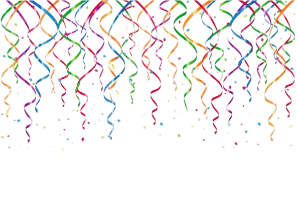
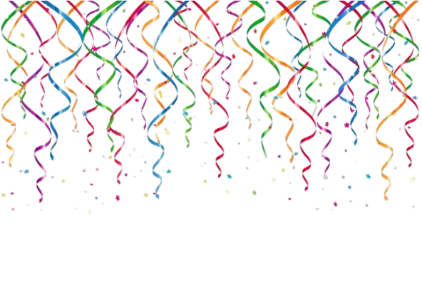

Bem-vindo à fase do festival!
 

Angry Birds Rio é um jogo spin-off da série Angry Birds, lançado em 2011 como parte de uma parceria promocional com o filme de animação da 20th Century Fox, também chamado Rio. O jogo leva os pássaros da série original para o Brasil, onde eles encontram novos desafios e personagens.
criado pela empresa finlandesa Rovio Entertainment em parceria com o estúdio Blue Sky e a 20th Century Fox, lançado em março de 2011. Ele foi desenvolvido como uma versão especial do famoso Angry Birds Clássico, inspirado no filme de animação "Rio", produzido pela mesma Fox e ambientado no Brasil. Essa colaboração uniu o sucesso dos pássaros raivosos com o universo colorido e tropical do filme, resultando em um dos jogos mais queridos da franquia. A história de Angry Birds Rio é diferente da do jogo original. Em vez dos porcos verdes roubarem os ovos dos pássaros, o enredo começa quando os Angry Birds são sequestrados e levados para o Rio de Janeiro, onde acabam presos em gaiolas. O objetivo das primeiras fases é libertar outros pássaros cativos, seguindo o clima do filme, que mostra o personagem Blu, uma arara azul rara, também capturada. Mais adiante na aventura, os pássaros enfrentam macaquinhos travessos que tentam atrapalhar sua jornada, até finalmente ajudar Blu e sua companheira Jewel a escapar dos vilões humanos e voltarem para a liberdade. A jogabilidade de Angry Birds Rio segue o mesmo estilo do clássico: o jogador usa um estilingue para lançar os pássaros e derrubar estruturas, mas desta vez em cenários brasileiros, com ambientes tropicais, florestas, praias e o famoso Carnaval do Rio. O jogo também apresentou novas animações, músicas animadas e gráficos mais coloridos, que deixaram a experiência ainda mais divertida. Além disso, o jogador podia encontrar novos tipos de pássaros e enfrentar desafios diferentes, adaptados ao tema do filme. Angry Birds Rio foi lançado inicialmente para iPhone e iPad, mas rapidamente chegou ao Android, PC e outras plataformas. Assim como o original, o jogo fez enorme sucesso, alcançando milhões de downloads em poucos dias e sendo muito elogiado por unir o mundo dos jogos com o cinema. A parceria entre Rovio e 20th Century Fox foi considerada uma das mais criativas da época, pois ajudou a divulgar tanto o jogo quanto o filme simultaneamente. Com o tempo, Angry Birds Rio recebeu várias atualizações com novos episódios, cada um representando uma parte da história, como “Smugglers’ Den” (Covil dos Contrabandistas), “Beach Volley” (Vôlei de Praia), “Carnaval” e “Airfield Chase” (Perseguição no Aeroporto). Cada fase trazia novos desafios, cenários inspirados no Brasil e momentos que lembravam cenas do filme. Isso fez com que o jogo se mantivesse popular por anos após o lançamento. Mesmo após o encerramento das atualizações, Angry Birds Rio continuou sendo lembrado com carinho pelos fãs como uma das versões mais criativas e bem-feitas da série. Ele combinou o humor e a diversão dos pássaros raivosos com o clima alegre e colorido do Rio de Janeiro, mostrando uma faceta diferente do universo Angry Birds. Hoje, Angry Birds Rio é considerado um clássico dentro da franquia, lembrado por sua trilha sonora contagiante, seus visuais vibrantes e pela forma como conseguiu unir o mundo dos jogos com o cinema de forma natural e divertida. Assim como o jogo original, ele marcou época e permanece na memória dos jogadores como uma das experiências mais especiais da série Angry Birds.